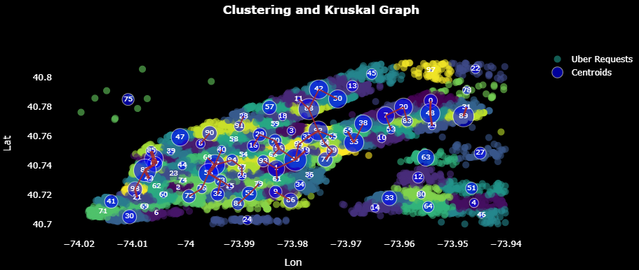
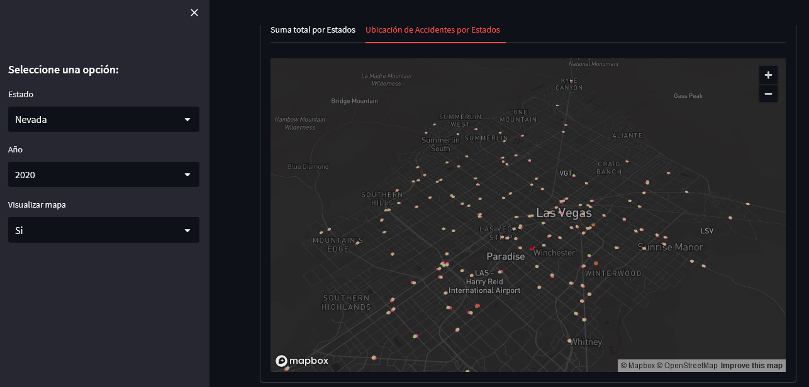

Pasto, Colombia
jhonjarealpe@gmail.com
Physicist Engineer and Masters in Data Science,
specialized in the analysis and processing of large
volumes of data using advanced Machine Learning,
Deep Learning, and Big Data techniques. I seek to
participate in challenging projects in a dynamic and
collaborative environment that promotes innovation.
I am committed to driving strategic decision-making
by transforming complex data into actionable and
valuable insights.
In a context where business information is essential, anticipating who will become customers is crucial for business strategy. To tackle this challenge, I used various machine learning techniques and the CRISP-DM methodology, focusing my research on five key phases:
Machine Learning Models and Techniques Used:
The project focuses on designing an urban transport network in New York City, using a representative dataset of Uber demand in the city. The goal is to complement the existing transport network, not replace it, leveraging tools based on machine learning.
Using clustering methods, between 100 and 200 locations with high transport demand were identified to establish potential stops. The clustering methods applied include k-means and hierarchical algorithms, evaluating their effectiveness in creating uniform and well-defined clusters. The choice of method is based on the ability to form clearly separated and uniform groups, with k-means being selected for its performance in this context.
The Kruskal algorithm, a minimum spanning tree approach, is applied to determine the optimal connections between the stops, minimizing the total length of the network while covering the highest possible demand. This step is crucial to ensure that the investment in the new transport technology is cost-effective, given its high cost.
The analysis includes a detailed evaluation of the density of each group and data preparation for the application of the Kruskal algorithm. The results are visualized, showing the importance of each connection in the proposed network and its impact on covering transport demand.
 Project linkThis project explores the most relevant factors associated with road accidents in the United States, based on statistics collected from 2011 to 2021 by the National Highway Traffic Safety Administration.
Using Python and Streamlit, an interactive dashboard was implemented that allows users to explore various variables and their impact on road safety.
 Project link